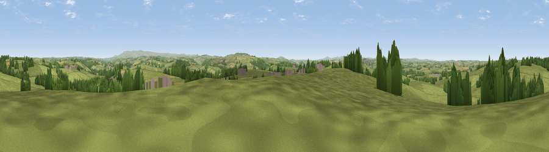

Viewpoint near Lifton
#23167 in England · top 43% of its area beats it · near LiftonThe view, rendered

A 360° render of this exact spot computed from the terrain model, tree cover and land cover — summer colours, afternoon light, calibrated against photographs of famous viewpoints. Real trees, hedges and buildings will differ in detail.
The panorama
Grey silhouette: terrain skyline in each direction (720 bearings, Earth curvature and refraction included). Dashed green: skyline with trees (+15 m) and buildings (+8 m) as obstacles. Blue strip: how far the ground is visible on each bearing.
Where the view opens
Wedge length = distance to the farthest visible ground on that bearing (vegetation-aware). Rings at 10, 25 and 50 km.
What fills the view
84% grassland · 9% woodland · 5% cropland · 1% built-up
Angular shares of the visible panorama (visual magnitude), not map area. Landscape diversity 0.25 (0–1 Shannon).
Key numbers
More beautiful places nearby
The staircase of upgrades: each row has a higher view potential than everything closer. Driving times are estimates from straight-line distance, calibrated against real road routing — check an actual route before setting out.
| Place | Direction | Drive | Score |
|---|---|---|---|
| Viewpoint near Lifton | S · 2 km | ~5 min | 51.0 |
| Viewpoint near Liftondown | SW · 3 km | ~6 min | 51.8 |
| Viewpoint near Tinhay | SSE · 4 km | ~8 min | 61.3 |
| Viewpoint near Chillaton | SSE · 6 km | ~13 min | 63.4 |
| Viewpoint near Bradstone | S · 7 km | ~15 min | 64.1 |
| Viewpoint near Chillaton | SSE · 7 km | ~15 min | 65.2 |
| Brent Tor | SE · 11 km | ~21 min | 73.4 |
| Viewpoint near Lydford | E · 15 km | ~27 min | 73.7 |
50.66276, -4.28327 · source: screening · position refined by local search. Computed location — check access rights before visiting.